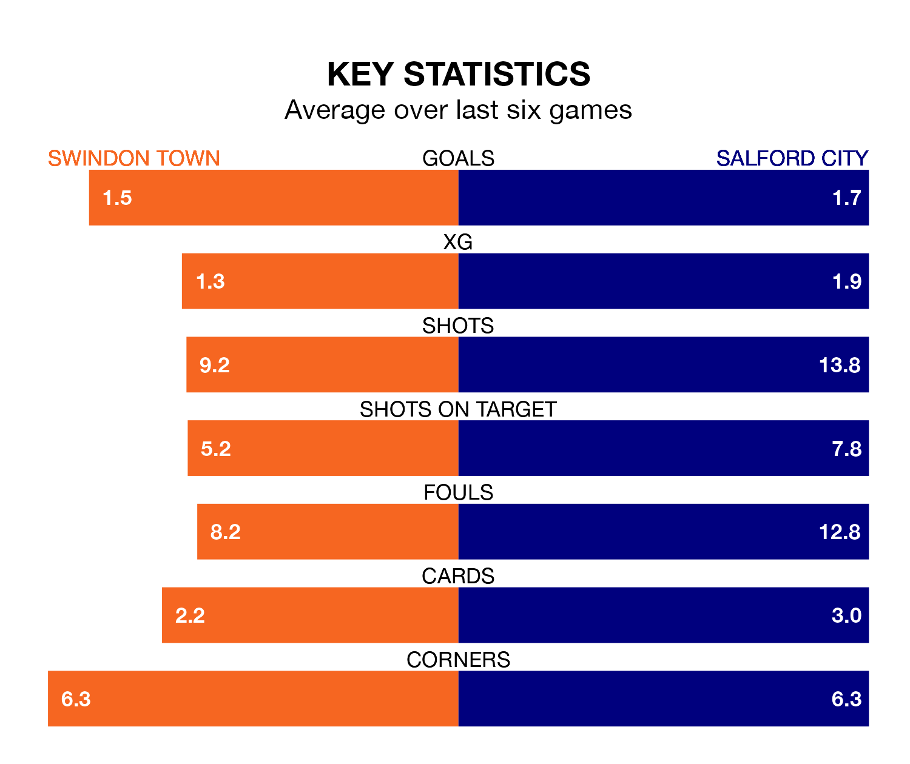

Salford City face Swindon Town on Saturday seeking to protect their long unbeaten run in EFL League Two.
The Ammies are unbeaten in five, with three wins and two draws, ahead of the 3pm kick-off.
They face a Swindon team who have won just one and drawn one over the same number of games.
With 53 goals in 30 games so far this season, Swindon are scoring more than average in the league with 1.8 goals per game. But they are conceding more than average too, letting in 56 goals at a rate of 1.9 per game.
Salford, meanwhile, are below average scorers, with 1.4 goals per game, compared to a league average of 1.5. They have conceded 1.7 goals per game.
In Matt Smith, City have one of the league's most on-form strikers so far this season. He has notched 19 goals in 30 appearances, to sit second in the scoring charts.
His goal rate of one every 128 minutes is slightly quicker than that of Jake Young, Town's top scorer with a goal every 129 minutes, and a total of 16 goals in 27 games.
In the last 10 years, Swindon and Salford have played each other on six occasions. Swindon won three of them, Salford one, and they drew twice.
On average, the Robins scored 1.5 goals and the Ammies 1.2 in those matches.
Their last meeting was on October 21, when they played out a 2-2 draw.
The Ammies are 19th in the table after 30 games, of which they have won nine and drawn seven, earning 34 points.
The Robins are two places ahead of the visitors in 17th, with 10 wins and seven draws putting them on 37 points.
Swindon's last match was on February 3, a 2-1 loss against Newport County, with Paul Glatzel getting the goal for the Robins.
Salford beat Wrexham 3-1 last time out, also on February 3, with Elliot Ward, Smith and Theo Vassell on the scoresheet.
Updated: 11:43 (UTC), 08/02/24